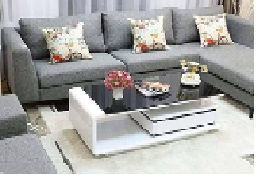

Phong cách hiện đại

Phong cách này nhằm gợi lên sự thoải mái, hoài cổ và truyền thống. Chắc chắn đây sẽ là một trong những xu hướng được ưa chuộng vào năm 2022
Phong cách cổ điển

Phong cách nội thất tân cổ điển chú trọng sự cân bằng và bên cạnh đó còn đem lại vẻ quus phái, sang trọng và lịch lãm vượt thời gian.
Phong cách kết hợp
Mang vẻ đẹp sang trọng, tinh tế nhưng vẫn rất hiện đại, mới mẻ các thiết kế nội thất tân cổ điển được ứng dụng trong rất nhiều công trình kiến trúc.